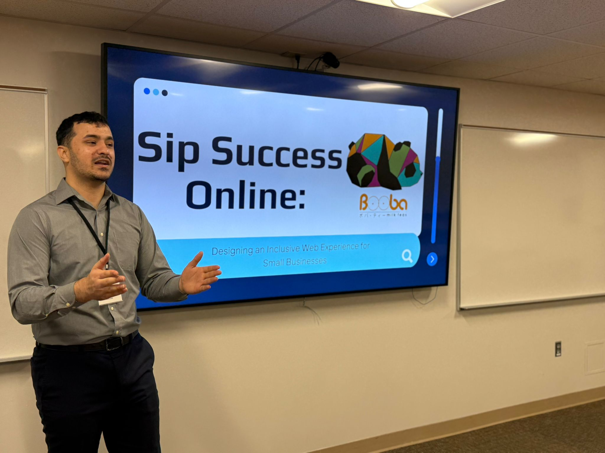
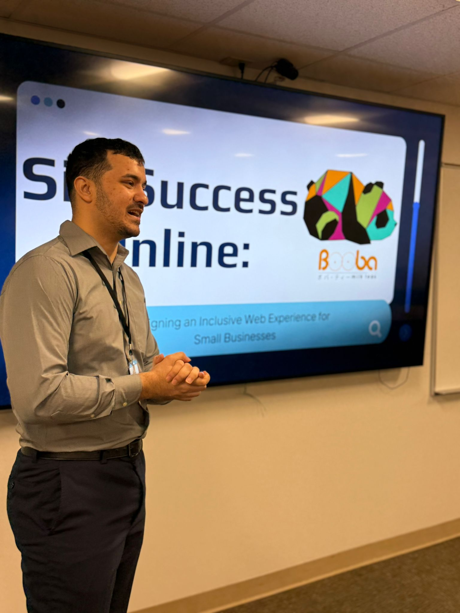
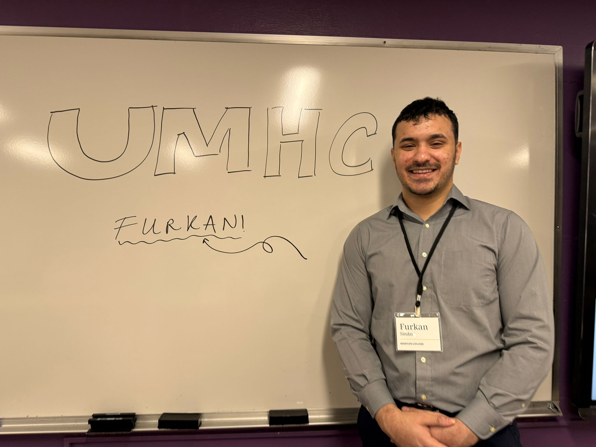
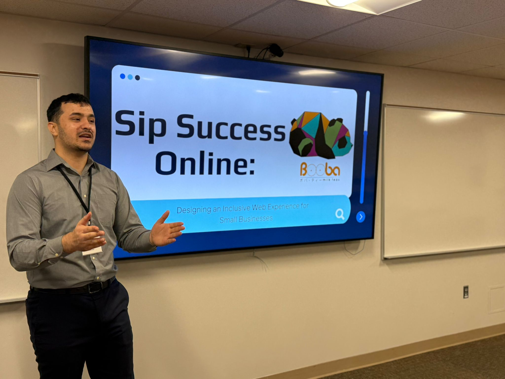
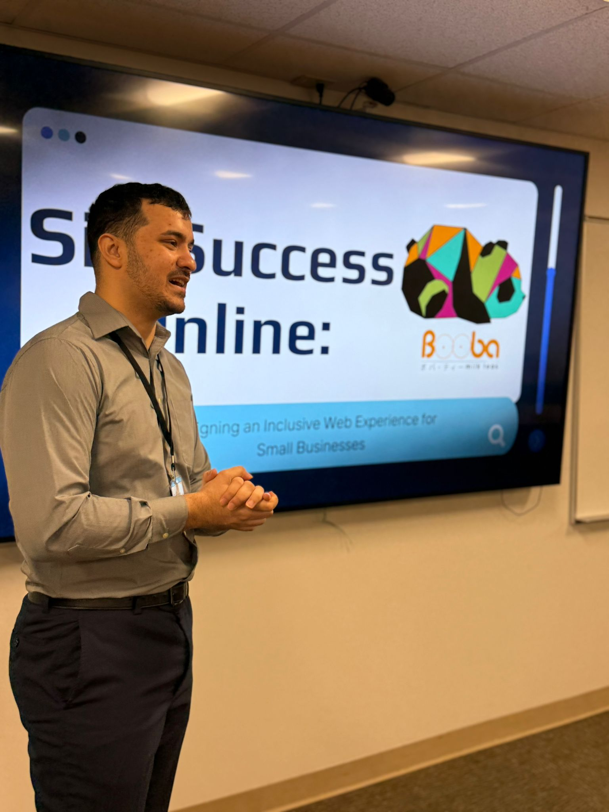
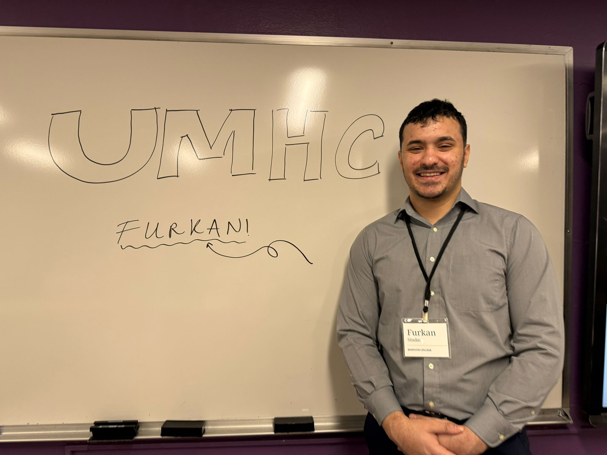

Presenting at the Upper Midwest Honors Conference
In Fall 2024, I created an accessible website for individuals with visual impairments. This project won first place in Madison College’s Fall Honors Project Competition, which opened the door for me to present at the 2025 Upper Midwest Honors Conference (UMHC).
Held in Minneapolis, Minnesota, the UMHC brought together students from across the Midwest to share their work and attend inspiring sessions. After arriving, I settled into the hotel, picked up my badge, and began preparing for my presentation. This time, I was not just presenting as a student—I was representing Madison College, the people who supported me, and the Wisconsin Council of the Blind and Visually Impaired.
During my presentation, I received powerful feedback about the meaningful impact of my project. I answered questions about accessibility design, shared the motivation behind my work, and explained how I balanced cultural inclusivity with technical accessibility.
One of the most inspiring moments was listening to a Somali woman, now a mayor in the U.S., talk about her journey. As an international student, I deeply connected with her story. She had faced many of the same challenges I had, yet her resilience and dedication to serving her community led her to success. Her words gave me hope and motivation.
By the end of the conference, I felt proud—not just for sharing my work, but for growing as a presenter and a leader. Representing my college and my community at such a meaningful event was an unforgettable honor.